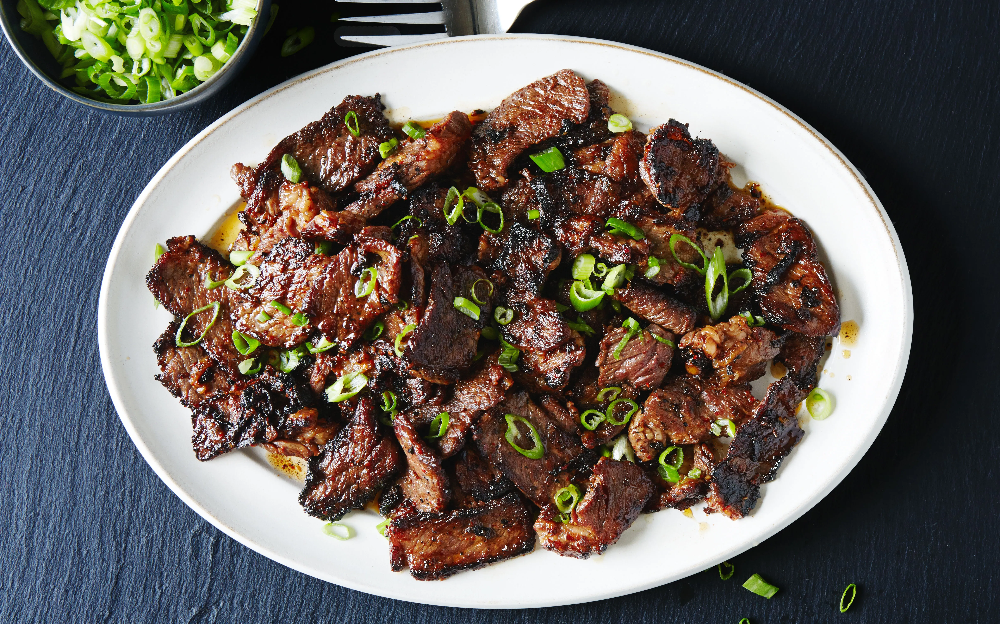

Bulgogi

Description
Pronounced "buul-GOH-ghee", Bulgogi comes from bul ("fire") and gogi ("meat"). It originated in
the Goguryeo era (37 BCE - 668 CE) in Korea and stuck around because it's literally just that good.
Because beef was generally expensive back then, it was served for the wealthy noble class. So dine like kings and queens!
Ingredients
- 1 1/2 pounds boneless rib eye steak
- 1/2 small pear, peeled and coarsely grated
- 1/4 cup reduced sodium soy sauce
- 2 tablesoons brown sugar
- 2 tablespoons toasted sesame oil
- 3 cloves garlic, minced
- 1 tablespoon freshly grated ginger
- 1 tablespoon gochujang (Korean red pepper paste)
- 2 tablespoons vegetable oil, divided
- 2 green onions, thinly sliced
- 2 teaspoon toasted sesame seeds
Steps
- Wrap steak in plastic wrap. Place in the freezer for 30 minutes. Unwrap and slice across the grain into 1/4-inch thick slices.
- Marinate the meat. In a medium bowl, combine pear, soy sauce, brown sugar, sesame oil, garlic, ginger and gochujang. In a gallon size
Ziploc bag, combine soy sauce mixture and steak; marinate for at least 2 hours to overnight, turning the bag occasionally.
- Cook the meat. Heat 1 tablespoon vegetable oil in a cast iron grill pan over medium-high heat. Working in batches, and steak
to the grill pan in a single layer and cook, flipping once, until charred and cooked through, about 2-3 minutes per side. Repeat with remaining
1 tablespoon vegetable oil and steak.
- Serve immediately. For added colour and taste, garnish with green onions and sesame seeds, if desired.